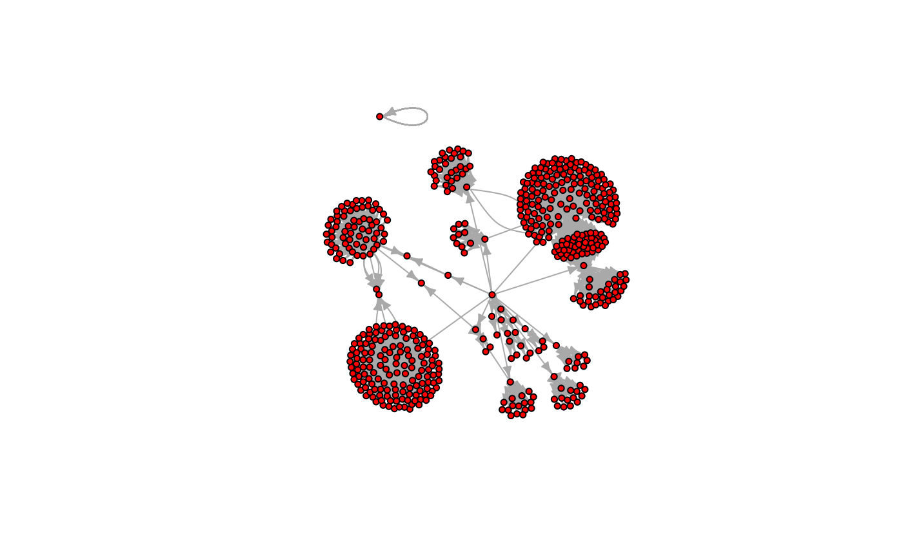

The Webgraph package is still under development, some features may not be working right now.
In this article, we will introduce you to the basics of Webgraph.
You can first install the Webgraph package through the
install_github() function of the devtools
package :
library(devtools)
#> Loading required package: usethis
install_github("Paulogcd/Webgraph")
#> Using github PAT from envvar GITHUB_PAT. Use `gitcreds::gitcreds_set()` and unset GITHUB_PAT in .Renviron (or elsewhere) if you want to use the more secure git credential store instead.
#> Downloading GitHub repo Paulogcd/Webgraph@HEAD
#> cpp11 (NA -> 0.4.7) [CRAN]
#> Installing 1 packages: cpp11
#> Installing package into '/home/runner/work/_temp/Library'
#> (as 'lib' is unspecified)
#> ── R CMD build ─────────────────────────────────────────────────────────────────
#> * checking for file ‘/tmp/RtmpTWP35U/remotes19dd1d2b999f/Paulogcd-Webgraph-6d8e69c/DESCRIPTION’ ... OK
#> * preparing ‘Webgraph’:
#> * checking DESCRIPTION meta-information ... OK
#> * checking for LF line-endings in source and make files and shell scripts
#> * checking for empty or unneeded directories
#> * building ‘Webgraph_0.0.0.9000.tar.gz’
#> Installing package into '/home/runner/work/_temp/Library'
#> (as 'lib' is unspecified)How to make edgelists
The main feature of the Webgraph package is creating edgelists of webpages connections. For that, several options are possible, depending on the number of webpages you are collecting data on :
- Several webpages
- Several webpages around one target
- One webpage
Several webpages
In the case that you want to collect the data of connections between
several webpages around one target, it is recommended that you use the
edgelists_of() function.
This function still needs to be implemented.
Several webpages around one target
In the case that you want to collect the data of the network formed
by the connections of pages aoround one main target, it is recommended
that you use the network_from_webpage() function.
Currently, only the prototype network_from_webpage1()
function exists. This function takes not only the target as a parameter,
but also the iteration value, that is the number of levels
you want the scrapping process to go. You can use it as :
library(Webgraph)
library(igraph)
#>
#> Attaching package: 'igraph'
#> The following objects are masked from 'package:stats':
#>
#> decompose, spectrum
#> The following object is masked from 'package:base':
#>
#> union
target = "http://google.com"
n <- network_from_webpage1(target, iteration = 2)
#> Time difference of 5.429765 secs
g <- graph_from_data_frame(n)
#> Warning in graph_from_data_frame(n): In `d' `NA' elements were replaced with
#> string "NA"
plot(g,
layout=layout_with_fr,
vertex.size=4,
vertex.label=NA,
vertex.label.dist=0.5,
vertex.color="red",
edge.arrow.size=0.5)
One webpage
In the case that you want to collect the data of the links of only
one page, you can use the edgelist_of() or the
network_from_webpage1() (with iteration=1)
functions. You can use them as :
target = "http://google.com"
# Function graph_from_webpage() :
g1 <- graph_from_webpage(target)
plot(g1,
layout=layout_with_fr,
vertex.size=4,
vertex.label=NA,
vertex.label.dist=0.5,
vertex.color="red",
edge.arrow.size=0.5)
# Function network_from_webpage1 :
n2 <- network_from_webpage1(target, iteration = 1)
#> Time difference of 0.09378958 secs
g2 <- graph_from_data_frame(n2)
plot(g2,
layout=layout_with_fr,
vertex.size=4,
vertex.label=NA,
vertex.label.dist=0.5,
vertex.color="red",
edge.arrow.size=0.5)